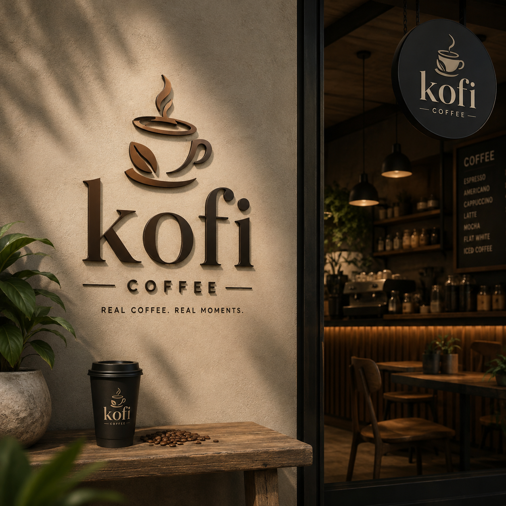

About Kofi
Welcome to Kofi, a welcoming local coffee shop built around
quality coffee, delicious food, friendly service, and community.
We believe that a coffee shop should be more than somewhere to
purchase a drink. It should be a comfortable place where people
can meet, relax, work, study, and enjoy meaningful moments.

Our History
Kofi was established from a passion for coffee and a desire to
create a warm and welcoming space within the local community.
The idea behind Kofi was simple: provide customers with
freshly prepared coffee and quality food while creating an
environment where everyone feels comfortable and valued.
From the beginning, Kofi has focused on combining quality
products with friendly customer service. What started as a
small coffee-shop idea has grown into a place where customers
can enjoy their favourite drinks, share meals, meet friends,
study, work, or simply take a break from their busy schedules.
Our menu has developed to offer a variety of options, including
espresso, cappuccino, Americano, iced coffee, hot chocolate,
croissants, muffins, sandwiches, and other treats.
As Kofi continues to grow, our goal remains the same: to build
lasting relationships with our customers and become a trusted
part of the community.
Our Mission
Our mission is to provide customers with high-quality coffee,
fresh food, and friendly service in a comfortable and welcoming
environment.
We aim to make every visit enjoyable by paying attention to
the quality of our products and the needs of our customers.
Through excellent service and a passion for coffee, we strive
to create positive experiences for everyone who visits Kofi.
Our Vision
Our vision is to become a trusted and loved coffee destination
within our community, recognised for quality, hospitality,
consistency, and meaningful customer experiences.
We hope to grow Kofi while maintaining the welcoming atmosphere
that makes our customers feel at home. We want Kofi to be a
place that brings people together over great coffee and good
food.
Our Values
-
Quality:
We are committed to providing quality coffee, food, and
service.
-
Customer Satisfaction:
We listen to our customers and aim to make every visit
enjoyable.
-
Community:
We believe in creating a space where people can connect
and feel welcome.
-
Hospitality:
We treat our customers with friendliness, respect, and
care.
-
Passion:
We are passionate about coffee and take pride in what
we serve.
Meet Our Team
Kofi is supported by a dedicated team who work together to
provide customers with quality products and excellent service.
Each member plays an important role in helping the coffee shop
operate successfully.
Thabang – Founder & Manager
As the founder and manager of Kofi, Thabang oversees the
day-to-day operations of the coffee shop. This includes
managing the team, maintaining quality standards, planning
business activities, and ensuring that customers receive
a positive experience.
Coffee Barista – Coffee Specialist
Our barista is responsible for preparing and serving
high-quality coffee and other beverages. From espresso
drinks to cappuccinos and iced coffees, the barista helps
ensure that every drink is prepared with care.
Kitchen Team – Food Preparation
Our kitchen team prepares the delicious food and treats
available at Kofi. They help maintain freshness, quality,
and presentation across our food menu.
Customer Service Team
Our customer service team welcomes customers, takes
orders, assists with enquiries, and helps create the
friendly atmosphere that Kofi is known for.
Our Commitment to Customers
At Kofi, our customers are at the centre of everything we do.
We are committed to providing a clean, comfortable, and
welcoming environment where customers can enjoy quality
products and friendly service.
Whether you are visiting us for your morning coffee, meeting
friends, enjoying lunch, studying, working, or simply taking
some time for yourself, we want every visit to Kofi to be
memorable.
Visit Kofi
Come and experience Kofi for yourself. Explore our menu,
discover your favourite drink, and become part of our growing
community.
Fresh coffee. Good food. Great moments. That's Kofi.
Explore Our Menu |
Contact Us